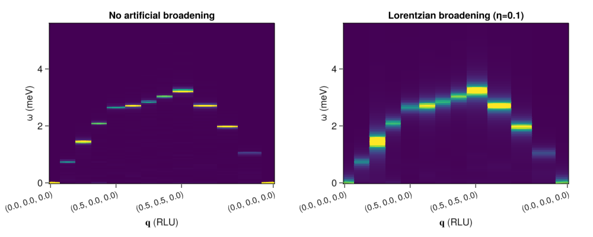
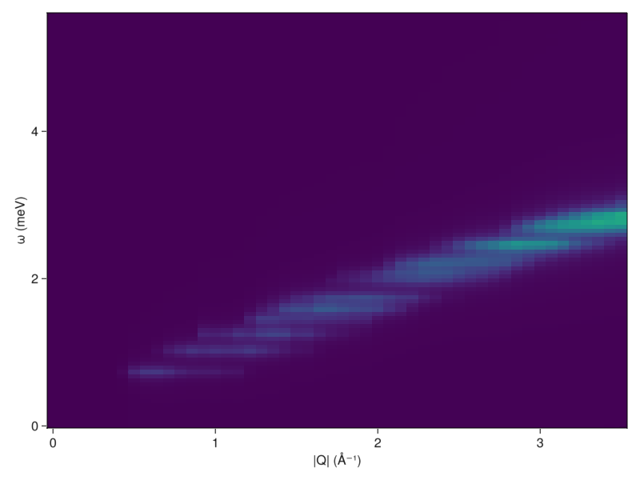

Powder Averaging
This tutorial gives a brief demonstration of how to calculate polycrystalline data using Sunny's structure factor tools.
We begin by constructing a simple anti-ferromagnetic model on a diamond lattice.
using Sunny, GLMakie
using Statistics: mean
dims = (8,8,8) # Lattice dimensions
seed = 1 # RNG seed for repeatable behavior
J = Sunny.meV_per_K*7.5413 # Nearest-neighbor exchange parameter
crystal = Sunny.diamond_crystal()
sys = System(crystal, dims, [SpinInfo(1, S=3/2)], :dipole; seed)
set_exchange!(sys, J, Bond(1, 3, [0,0,0]))We next set up a Langevin integrator and thermalize the system.
Δt = 0.07 # Step size for Langevin integrator
kT = Sunny.meV_per_K * 2 # Temperature of simulation (2K)
λ = 0.1 # Damping parameter
integrator = Langevin(Δt; kT, λ);
for _ ∈ 1:3000
step!(sys, integrator)
end;We can now calculate $𝒮(𝐪,ω)$ with DynamicStructureFactor. We will tell Sunny to symmetrize the sample trajectory along the time-axis to minimize Fourier artifacts.
sf = DynamicStructureFactor(sys;
Δt=2Δt,
nω=100,
ωmax=5.5,
process_trajectory=:symmetrize
);To get some intuition about the expected results, we first look at the "single crystal" results along a high-symmetry path in the first Brillouin zone. While doing so, we will add some artificial broadening along the energy axis with broaden_energy. To use this function, it is necessary to define a kernel function with the form, kernel(ω, ω₀), where ω is energy and ω₀ is the center frequency of the kernel. In this example we apply some Lorentzian broadening using an anonymous function: (ω, ω₀) -> lorentzian(ω-ω₀, 0.1).
qpoints = [[0.0, 0.0, 0.0], [0.5, 0.0, 0.0], [0.5, 0.5, 0.0], [0.0, 0.0, 0.0]]
qs, markers = connected_path(qpoints, 50)
is = intensities(sf, qs, :trace; interpolation=:none)
is_broad = broaden_energy(sf, is, (ω, ω₀) -> lorentzian(ω-ω₀, 0.1))
# Plot results
fig = Figure(; resolution=(1000,400))
xticklabels = [string(tuple(qs[i]...)) for i in markers]
plotparams = (;
aspect=1.4,
ylabel = "ω (meV)",
xlabel = "𝐪 (RLU)",
xticks=(markers, xticklabels),
xticklabelrotation=π/10,
xticklabelsize=14,
)
ax1 = Axis(fig[1,1]; title="No artificial broadening", plotparams...)
heatmap!(ax1, 1:size(is, 1), ωs(sf), is; colorrange=(0,0.5))
ax2 = Axis(fig[1,2]; title="Lorentzian broadening (η=0.1)", plotparams...)
heatmap!(ax2, 1:size(is, 1), ωs(sf), is_broad; colorrange=(0,2.0))
fig
We next write a simple powder averaging function that takes a structure factor, a list of radius values (Å⁻¹), and a density parameter (Å⁻²) that will control the number of wave vectors to sample at each radius. For each radius r, the function will generate wavevectors on a sphere of this radius and retrieve their intensities. These intensities will be broadened, as just demonstrated above, and then averaged to produce a single vector of energy-intensities for each r. Note that our powder_average function passes most of its keywords through to intensities, so it can be given kT, formfactors, etc., and these parameters will be applied to the calculation.
function powder_average(sf, rs, density; η=0.1, mode=:perp, kwargs...)
nω = length(ωs(sf))
output = zeros(Float64, length(rs), nω)
for (i, r) in enumerate(rs)
qs = spherical_shell(sf, r, density) # Get points on a sphere of radius r
if length(qs) == 0
qs = [[0., 0., 0.]] # If no points (r is too small), just look at 0 vector
end
vals = intensities(sf, qs, mode; kwargs...) # Retrieve energy intensities
vals[:,1] .*= 0.0 # Remove elastic peaks before broadening
vals = broaden_energy(sf, vals, (ω,ω₀)->lorentzian(ω-ω₀, η)) # Apply Lorentzian broadening
output[i,:] = reshape(mean(vals, dims=1), (nω,)) # Average single radius results and save
end
return output
end;Finally, we perform the calculation,
rs = range(0, 6π, length=55) # Set of radius values
η = 0.05 # Lorentzian broadening parameter
density = 0.15 # Number of samples in Å⁻²
pa = powder_average(sf, rs, density; η, kT);and plot the results.
fig = Figure()
ax = Axis(fig[1,1]; xlabel = "|Q| (Å⁻¹)", ylabel = "ω (meV)")
heatmap!(ax, rs, ωs(sf), pa; colorrange=(0, 25.0))
fig
Note that the bandwidth is similar to what we saw above along the high symmetry path.
This was a very quick calculation. The structure factor calculation itself and the powder averaging will each execute in < 10 s on a typical laptop. Higher quality results can be obtained by:
- Increasing the number of samples used to calculate $𝒮(𝐪,ω)$ using
add_sample! - Increasing the system size to improve momentum space resolution
- Increasing the energy resolution (
nωkeyword ofDynamicStructureFactor) - Applying instrument-specific energy broadening by giving
broaden_energya custom kernel function. - Including
FormFactorcorrections - Setting
interpolation=:linearwhen retrieving intensities in the powder averaging loop.
This page was generated using Literate.jl.